Зима и лето. Закрытие мамайского сезона
( 21-22 апреля 2007 )
часть 2 воскресенье
В эти выходные на Мамае ожидались редкостные мега-события - прилет гавайцев на
вентиляторе и явление SaTаны в "Храме Божием". Однако, мы обломились насчет
зрелищ, по воле небес супер-замесы не состоялись, а на мамайской тропе шел
обыкновенный дождь и пять сноубордистов.
Наша задача проста - последний раз в этом сезоне покататься и отметить это дело :) |
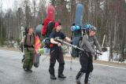 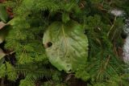 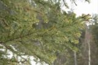 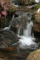
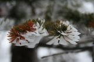 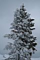 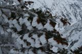
Дождик кончился, снег начался. Сноубордисты отобедали в Легендарном Кунге
Мазафаков и пошли вверх, мимо Трех Берез, мимо Мамая, по гребню на запад, а потом на юг. И оказался перед ними Южный цирк во всей своей широте и красоте,
только вот в него еще надо как-то спуститься с гребня. А склон мало того что крутой,
так еще и видимость рельефа никакая - сплошное молоко без указания дна пропасти.
Куда ехать? Как ехать? И зачем ехать? Может обратно, к трем березам сходим?
Шутки в сторону, дана команда "Всем бояцо!" и первым вниз улетает Макс, за
ним отважные, но осторожные Ксюша и Катя, затем промелькнул Андрей
(не оставив шанса на фотокадр) и последним докатал целину Лёха. |
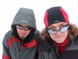 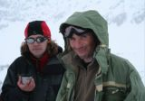 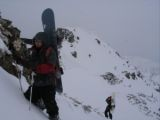
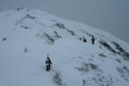 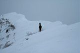 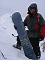 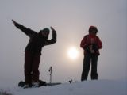
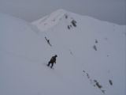 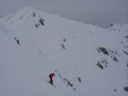 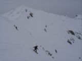 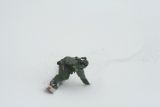
Далеко разгоняться не стали, потому как приехали к какому-то пупырю. Вообще,
в Южном цирке полным полно всяких там пупырей, дропов, склонов, елок и плоскотин.
Все везде катательно и ходительно по плотному весеннему снегу. Но тут появилась горелка,
и Катя начала варить чай. Нашелся маленький дроп, парни стали с него прыгать. Прикрутился
новенький телевик, Ксюша начала их фотографировать. Так что пока батоним в цирке: прыгаем,
фотаем, пьем чай, едим ништяки, играем на дуде, мерзнем на ветру со снегом. Да, похоже с
погодой нам сегодня повезло, закрытие зимнего сезона - при зимней погоде, что бы не забывали :) |
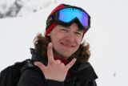 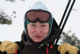 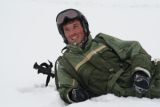 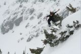
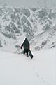 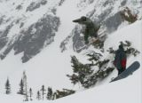 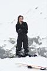 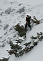 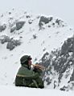
Покатили через цирк - сначала был хороший склон, потом поехали медленно, по минимальному
уклону через редкий лес, начался ручейный овраг, где-то здесь надо переходить на левый склон
и выкатывать из цирка на мега-траверс прямо до кунга. Катание в цирке понравилось всем, а
вот мега-траверс на одном канте - удовольствие не для всех. Надо прорываться через лес, через
лавинники и овраги, и при этом не надо терять высоту, товарищей и средства радиосвязи. |
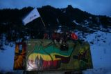 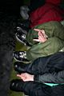 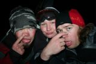
Вернулись на базу в 10-м часу, в сумерках, прям как в начале сезона. Сидели на крыше
кунга, пили пиво и решали жизненно важные вопросы. Что варить на ужин? Еду! Закипятим
снег и заварим фастфуд! Где ночевать? Конечно же в кунге, мы же не идиоты ставить
палатки, мы же их просто носим туда-сюда в рюкзаках для тренировки организма! Печку
топить? Не, ну это же такой напряг после катального дня - искать дрова, пилить, колоть,
разжигать, потеть. Вещи сушить? А для чего - утром надеть сухие шмотки и через час
опять их промочить?!
Вроде всё порешали - теперь за дело! Жизнь кипит, хватит суетится, пора бы подкрепиться.
Пить будем настойку на #?%овых массах "Моя семья", закусывать ананасами, лимонами и
салом. Будем говорить разговоры, шутить шутки и смеяться. Предупреждение! не надо
шутить под руку выпивающему и закусывающему товарищу! Это чревато конвульсиями
под кунгом в особо тяжелых случаях. К счастью, был "всего лишь" легкий случай :)
Выпили за здоровье, наше и водителя вертолета, за 10й юбилейный неЗахоД, за
Новый год и День конституции, и за нереальные 2245567789-е градусы джиберов,
за что-то еще, уже не помню, но было смешно :) Да, всякое бывает в этой безумной
жизни! Мамайская звездная ночь, кусочек радости, плеер в ухо и в отключку...
А на завтра, как обычно - SunDay! Лето не за горами - лето в горах ! |

... продолжение ...
|